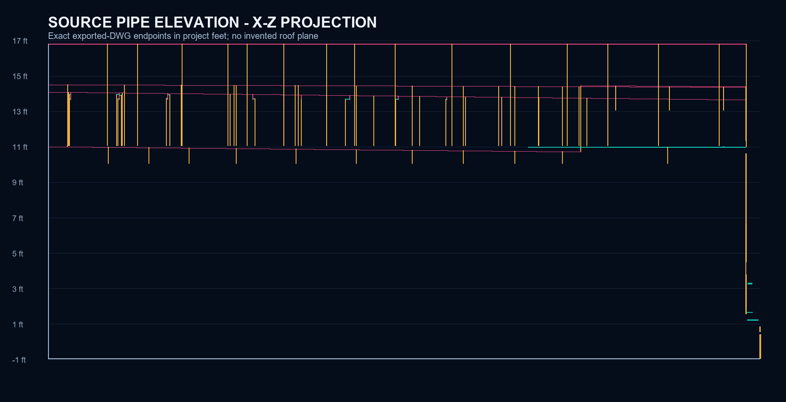
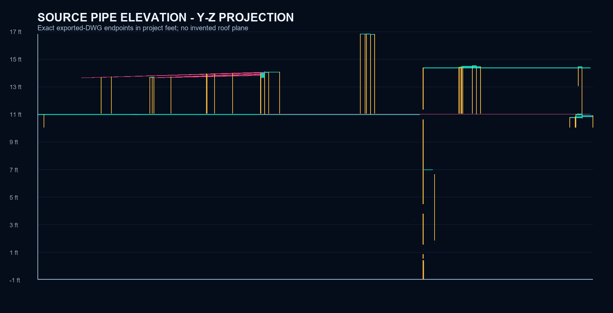
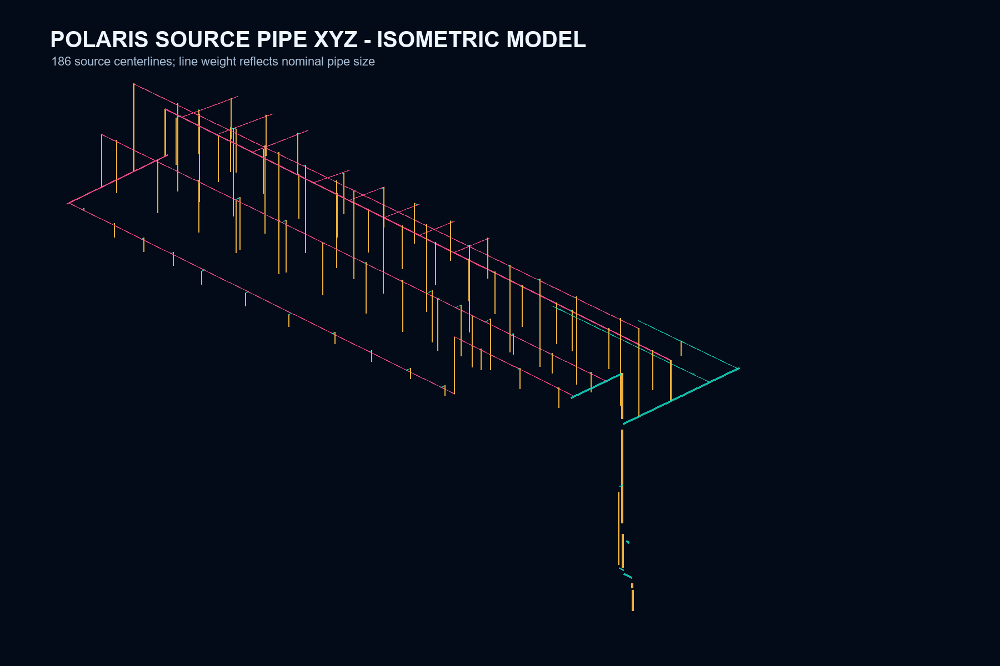

Exact pipe XYZ registered to approved and as-built FP2
The underlay is the protected approved FP2 render. Its pixels are identical to the as-built FP2 page. Colored geometry comes from the exported AutoSPRINK DWG, transformed into project feet through the sealed 73-vertex architectural registration.
Approved FP2 with source pipe projection
Cyan is level, magenta carries the exact downhill direction arrow for sloped plan runs, and gold marks vertical or near-vertical transitions.

X-Z elevation

Y-Z elevation

Source XYZ isometric model
This model uses the same 186 endpoint pairs as the approved-plan overlay. It is not image-generated artwork.

Acceptance boundary
Exact source pipe XYZ, unit conversion, plan direction, and roof-relative geometric slope are verified for Polaris. Hydraulic flow direction, drainage-grade intent, complete fitting semantics, drain destinations, fabrication, field release, and transfer of exact Z to New Hope remain fail-closed.